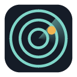

Rug Radar
Check a Solana token before you buy it, and see the proof.
- A straight verdict. AVOID, CAUTION or NO TRAPS FOUND. Never "safe".
- 17 checks with receipts. Every flag links to Solscan, RugCheck, DexScreener or Jupiter so you can verify it.
- The real cost. What buying and selling your amount costs, and how far the price must rise just to break even.
- Paid-promotion and can't-sell warnings, so hype and one-way trading don't pass unnoticed.
- Never touches your wallet. No connecting, no signing, no seed phrases, no tracking.
Rug Radar is in private beta for Chrome.
Support
Found a wrong verdict, a bug, or have an idea? Email artfcl.py@gmail.com. Include the token address and what you expected. It helps a lot.
Rug Radar is a research tool, not financial advice. Results come from public data and can be wrong or incomplete. A token with no traps found can still lose value.